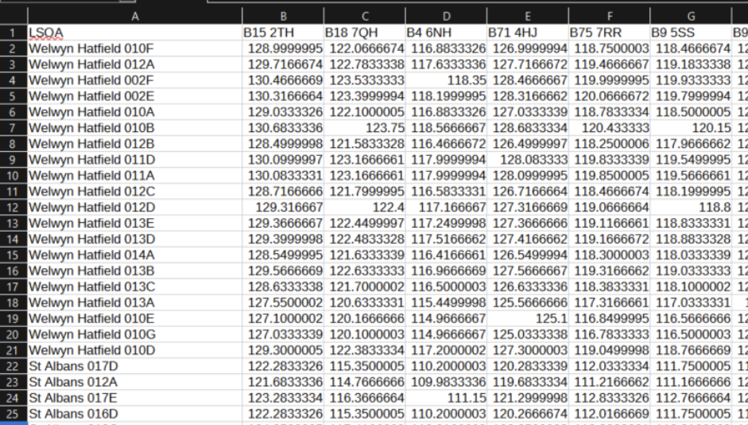
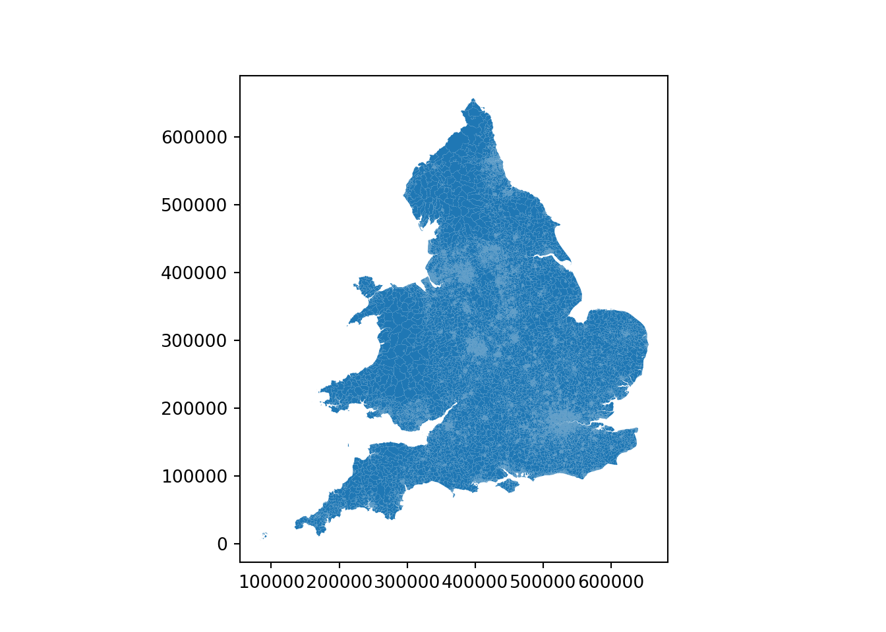
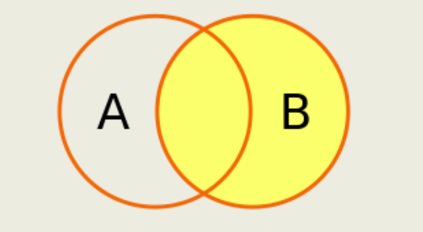
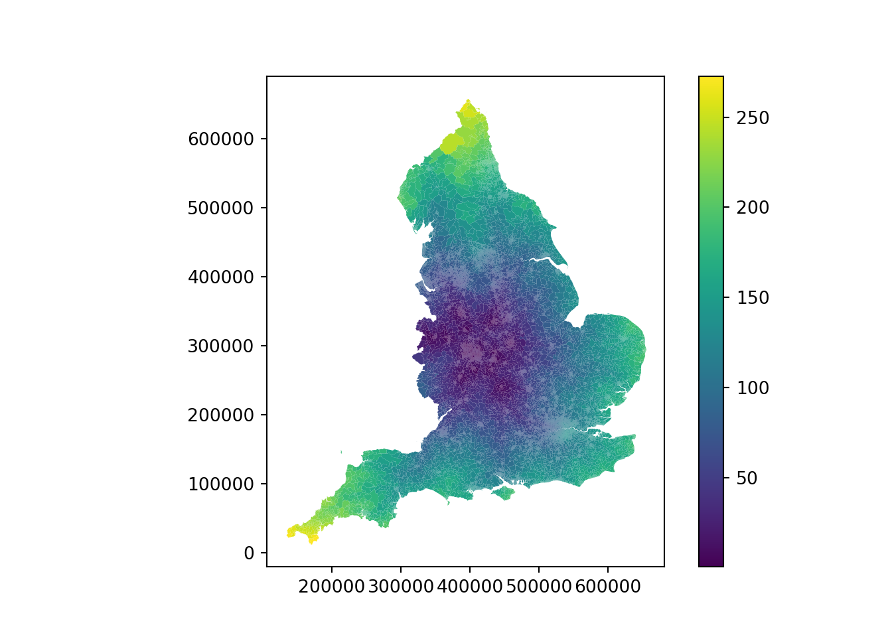
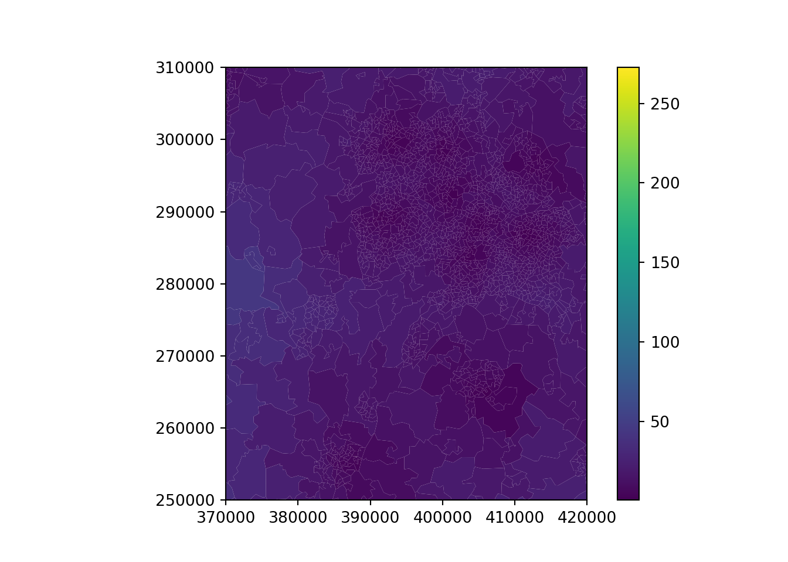
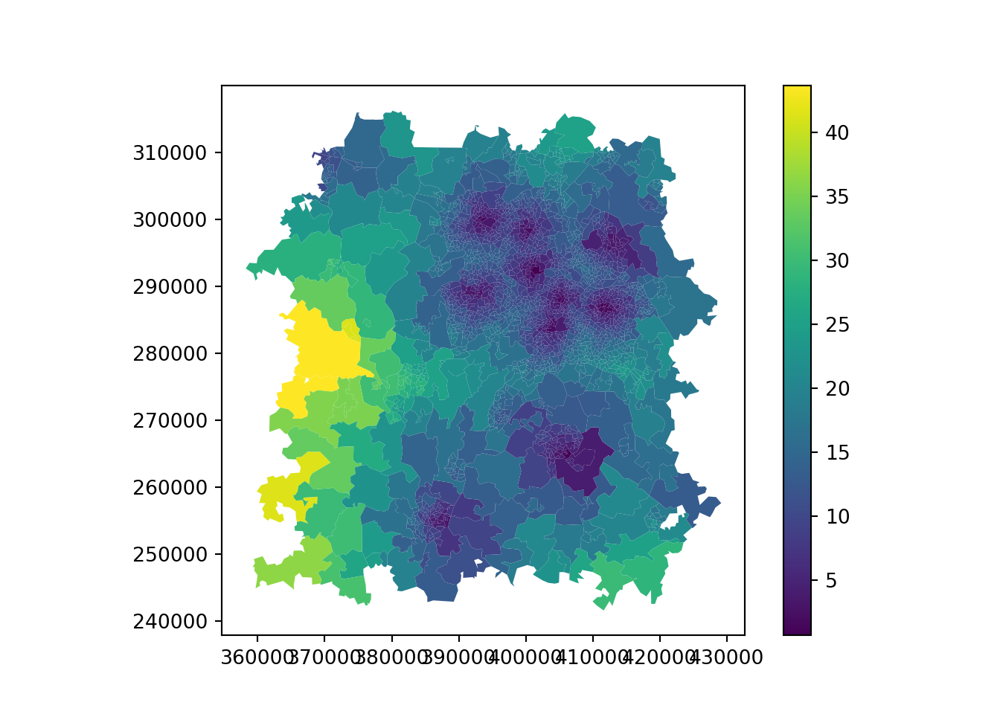
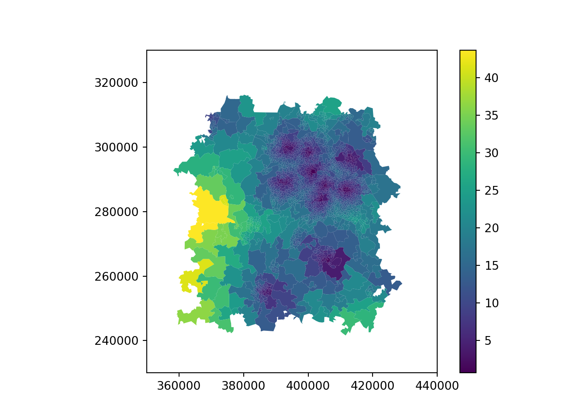
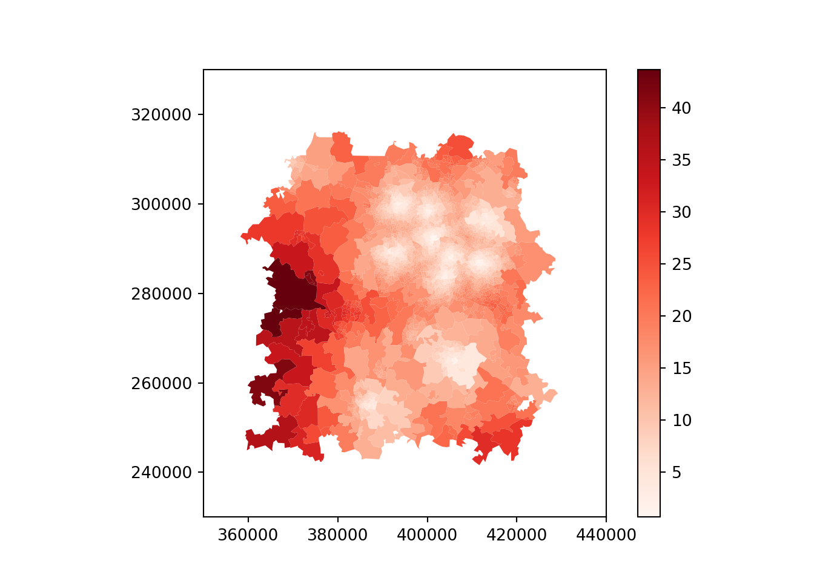
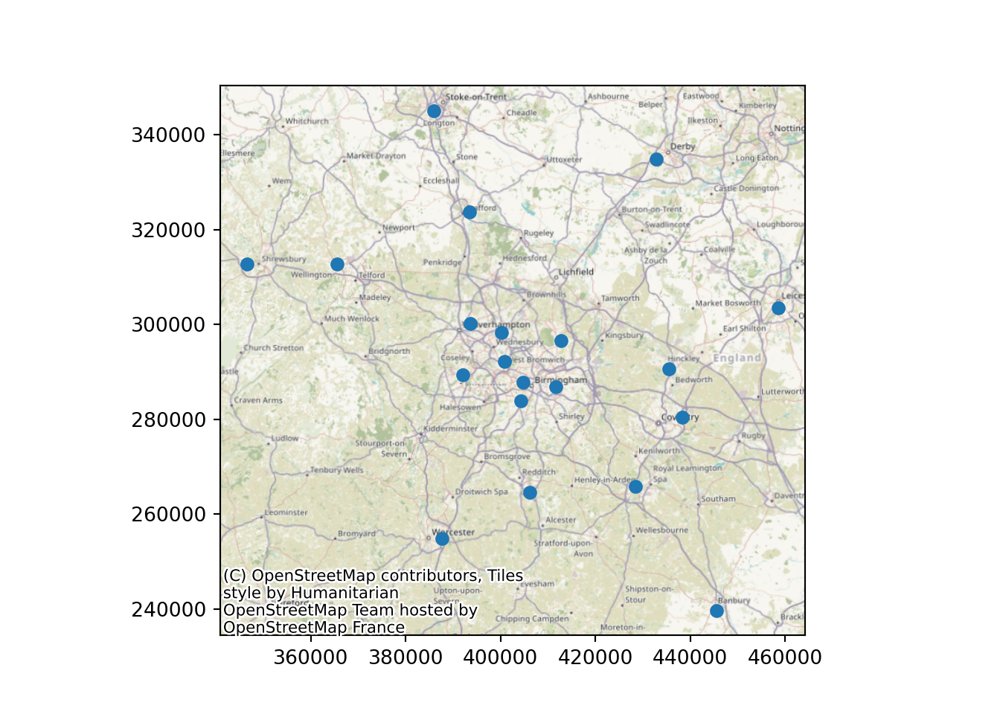
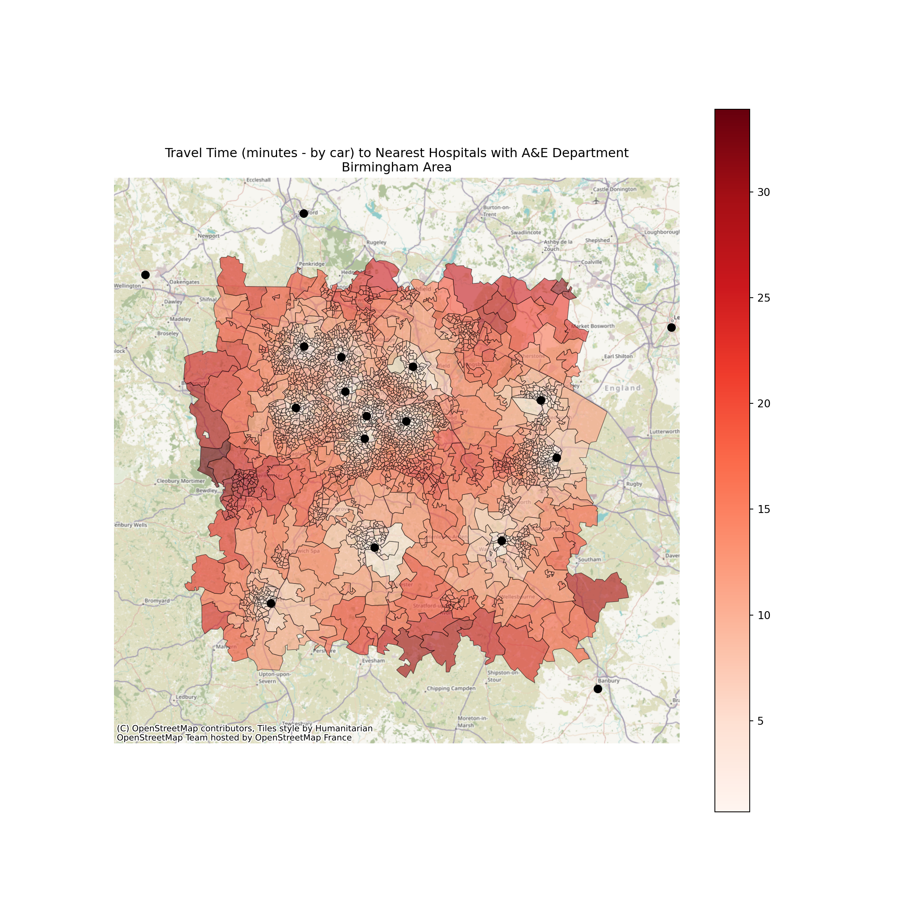

import pandas as pd
import geopandas
import matplotlib.pyplot as plt
import requests
import contextily as cx24 Visualising Travel Times in Python
24.1 Working with precalculated travel matrices
You may be able to find useful datasets that other people have created of common lookups you may need to do.
This is the travel time from every LSOA in the country to every hospital in the country (by car, assuming there is no traffic)
Tip
You’ll need to check whether the data is in hours, minutes or seconds! It may vary depending on the web service used and other processing.

In this dataset,
Rows = LSOA
Columns = Postcodes of Hospital and Clinic Sites
Cell = travel time from LSOA to hospital/clinic (minutes)
24.1.1 Calculating the shortest travel time
Let’s look at an example of how to take a matrix like this and calculate the shortest travel time to a site from each LSOA.
We’ve been given a dataset containing postcodes of hospitals with 24-hour A&E departments within 50 miles of the centre of Birmingham.
Let’s first import the packages we’ll be needing.
birmingham_area_hospitals_df postcode name
0 B18 7QH City Hospital
1 B15 2TH Queen Elizabeth Hospital Birmingham
2 B9 5SS Heartlands Hospital
3 B71 4HJ Sandwell District General Hospital
4 B75 7RR Good Hope Hospital
5 WS2 9PS Manor Hospital
6 DY1 2HQ Russells Hall Hospital
7 WV10 0QP New Cross Hospital
8 B98 7UB Alexandra Hospital
9 CV10 7DJ George Eliot Hospital
10 CV34 5BW Warwick Hospital
11 CV2 2DX University Hospital (Coventry)
12 WR5 1DD Worcestershire Royal Hospital
13 ST16 3SA Stafford Hospital
14 TF1 6TF Princess Royal Hospital
15 LE1 5WW Leicester Royal Infirmary
16 DE22 3NE Royal Derby Hospital
17 OX16 9AL Horton General Hospital
18 ST4 6QG Royal Stoke University Hospital
19 SY3 8XQ Royal Shrewsbury HospitalWe know the extent we are interested in, and need to visualise the current areas with longer journey times.
We’ve got a precalculated travel matrix of car times available to us, showing the distance to any hospital in the UK from any LSOA in the UK.
car_travel_time_lookup = pd.read_csv("https://github.com/hsma-programme/h6_3c_interactive_plots_travel/raw/main/h6_3c_interactive_plots_travel/example_code/travel_matrix_minutes.zip")
Tip
When distances relate to LSOAs, MSOAs or postcodes, they will often relate to the centroid of that region (the centre point).
Remember - MSOAs and LSOAs (and even some postcodes) can cover a fairly large area. Datasets exist of population-weighted centroids, which may be more appropriate to use.
The first thing we’re going to do is make a new dataframe that only contains the columns for the relevant hospitals.
Warning
Always be very careful with boundary issues
In this case we’ve been told to only visualise their shortest journey to any one of the hospitals in this list. But someone at the edge of the region showing a very short journey time could be just down the road from a different hospital not in our dataset!
car_travel_time_lookup_birmingham_hospitals = car_travel_time_lookup.loc[
# keep all of the rows
:,
# keep the LSOA column and columns for relevant hospitals
['LSOA'] + birmingham_area_hospitals_df.postcode.to_list()
]
car_travel_time_lookup_birmingham_hospitals.head() LSOA B18 7QH ... ST4 6QG SY3 8XQ
0 Welwyn Hatfield 010F 122.066667 ... 158.966667 168.683334
1 Welwyn Hatfield 012A 122.783334 ... 159.683334 169.400000
2 Welwyn Hatfield 002F 123.533333 ... 160.433333 170.150000
3 Welwyn Hatfield 002E 123.399999 ... 160.299999 170.000001
4 Welwyn Hatfield 010A 122.100000 ... 159.000000 168.716667
[5 rows x 21 columns]Now, we want to return the shortest travel time to any of these hospitals.
So what we need is the smallest value in any of the columns - except the LSOA name!
So first, let’s change the LSOA name to be our index.
This means it will be ignored when we try to look for the minimum travel time.
car_travel_time_lookup_birmingham_hospitals = car_travel_time_lookup_birmingham_hospitals.set_index('LSOA')
car_travel_time_lookup_birmingham_hospitals B18 7QH B15 2TH ... ST4 6QG SY3 8XQ
LSOA ...
Welwyn Hatfield 010F 122.066667 129.000000 ... 158.966667 168.683334
Welwyn Hatfield 012A 122.783334 129.716667 ... 159.683334 169.400000
Welwyn Hatfield 002F 123.533333 130.466667 ... 160.433333 170.150000
Welwyn Hatfield 002E 123.399999 130.316666 ... 160.299999 170.000001
Welwyn Hatfield 010A 122.100000 129.033333 ... 159.000000 168.716667
... ... ... ... ... ...
Selby 009C 135.750000 142.783334 ... 130.416667 165.850000
Selby 007D 139.116666 146.150001 ... 133.783334 170.050000
Selby 007B 136.750000 143.766667 ... 133.633333 168.550000
Selby 006A 138.550000 145.583333 ... 135.433333 170.350000
Selby 007A 140.150000 147.166667 ... 137.033333 171.816667
[32843 rows x 20 columns]Now we can calculate the row-wise minimum (i.e. look across the columns and find the smallest value for that row) And turn this into a new column.
car_travel_time_lookup_birmingham_hospitals['shortest'] = (
# axis = 1 means row-wise minimum (instead of columnwise)
car_travel_time_lookup_birmingham_hospitals.min(axis=1)
)
car_travel_time_lookup_birmingham_hospitals.head() B18 7QH B15 2TH ... SY3 8XQ shortest
LSOA ...
Welwyn Hatfield 010F 122.066667 129.000000 ... 168.683334 90.516666
Welwyn Hatfield 012A 122.783334 129.716667 ... 169.400000 91.233333
Welwyn Hatfield 002F 123.533333 130.466667 ... 170.150000 91.983334
Welwyn Hatfield 002E 123.399999 130.316666 ... 170.000001 91.850000
Welwyn Hatfield 010A 122.100000 129.033333 ... 168.716667 90.549999
[5 rows x 21 columns]Now we need to join this to some kind of geometry - as at the moment we have the name of each LSOA, but no way of plotting them.
We don’t really know where they are until we import something like a geojson, geopkg or shapefile.
lsoa_geojson_path = 'https://github.com/hsma-programme/h6_3c_interactive_plots_travel/raw/main/h6_3c_interactive_plots_travel/example_code/LSOA_2011_Boundaries_Super_Generalised_Clipped_BSC_EW_V4.geojson'
lsoa_boundaries = geopandas.read_file(lsoa_geojson_path)Let’s just plot this to check it’s what we’re expecting and what the CRS is.
This looks like it’s using the British National Grid system.
(we can tell because the range is 0 to ~ 700,000 in each direction rather than numbers < 100 if it was latitude and longitude)
lsoa_boundaries.plot()
24.1.2 Joining the travel times to geometry data
Now it’s time to join it to the travel time data per LSOA.
We use the pandas merge() function.
Tip
Note that we pass in the lsoa boundaries geodataframe first out of the two dataframes - this ensures the output will be a geopandas file and not get converted to a standard dataframe.
Tip
Side note: we are resetting the index of our travel time dataframe so that LSOA11NM is a column, not an index (i.e. our row identifiers are 0, 1, 2, 3 etc., not the names of the LSOAs).
nearest_hospital_travel_bham_gdf = pd.merge(
lsoa_boundaries,
car_travel_time_lookup_birmingham_hospitals.reset_index(),
left_on="LSOA11NM",
right_on="LSOA",
how="right"
)We’re doing a right join, which means every row in the car_travel_time_lookup_birmingham_hospitals dataframe will be kept, even if there isn’t a match in the lsoa_boundaries file.

24.1.3 Plotting the travel times
Now let’s try plotting this!
It looks like the travel times are shortest around Birmingham - which makes perfect sense as we’ve only been checking against the hospitals in Birmingham!
nearest_hospital_travel_bham_gdf.plot(
column='shortest',
legend=True
)
24.1.4 Refining the travel time plot
24.1.4.1 Adjusting the plot boundaries
Let’s zoom in a bit so we’re not giving misleading information.
Warning
If we just zoom, the scale of our output isn’t very helpful.
This is because the legend is based on the entire dataframe, which still includes those distant regions, even if they aren’t shown in the final plot.
xmin, xmax = 370000, 420000
ymin, ymax = 250000, 310000
ax = nearest_hospital_travel_bham_gdf.plot(
column='shortest',
legend=True
)
ax.set_xlim(xmin, xmax)(370000.0, 420000.0)ax.set_ylim(ymin, ymax)(250000.0, 310000.0)
Remember the .cx method for filtering down to just those regions within a boundary box?
If we use that first, our plot becomes a lot more informative!
xmin, xmax = 370000, 420000
ymin, ymax = 250000, 310000
nearest_hospital_travel_bham_gdf_filter = nearest_hospital_travel_bham_gdf.cx[xmin:xmax, ymin:ymax]
ax = nearest_hospital_travel_bham_gdf_filter.plot(
column='shortest',
legend=True
)
Would it look better with some whitespace around the edge of the map to make it clear what area we are considering?
24.1.4.2 Extending the plot extent back out
We can make the matplotlib limits slightly different to the boundary box to achieve this.
xmin, xmax = 370000, 420000
ymin, ymax = 250000, 310000
nearest_hospital_travel_bham_gdf_filter = nearest_hospital_travel_bham_gdf.cx[xmin:xmax, ymin:ymax]
ax = nearest_hospital_travel_bham_gdf_filter.plot(
column='shortest',
legend=True
)
ax.set_xlim(xmin-20000, xmax+20000)(350000.0, 440000.0)ax.set_ylim(ymin-20000, ymax+20000)(230000.0, 330000.0)
24.1.4.3 Changing the colourschemes
Let’s experiment with a different colourscheme.
xmin, xmax = 370000, 420000
ymin, ymax = 250000, 310000
nearest_hospital_travel_bham_gdf_filter = nearest_hospital_travel_bham_gdf.cx[xmin:xmax, ymin:ymax]
ax = nearest_hospital_travel_bham_gdf_filter.plot(
column='shortest',
legend=True,
cmap="Reds"
)
ax.set_xlim(xmin-20000, xmax+20000)(350000.0, 440000.0)ax.set_ylim(ymin-20000, ymax+20000)(230000.0, 330000.0)
24.1.4.4 Adding in points to show the possible destinations
Let’s make use of the postcodes.io web API.
We import requests to help us interact with the API.
We pass a list of postcodes to the relevant web address.
postcode_lookup = requests.post(
"https://api.postcodes.io/postcodes",
json={"postcodes": birmingham_area_hospitals_df['postcode'].tolist()}
)
postcode_lookup<Response [200]>Then we turn it into a dataframe and join it to our hospital df.
# label: convert_postocde_json_to_df
postcode_lookup = pd.json_normalize(postcode_lookup.json()['result'], sep='_')
postcode_lookup query result_postcode ... result_codes_lau2 result_codes_pfa
0 B18 7QH B18 7QH ... E08000025 E23000014
1 B15 2TH B15 2TH ... E08000025 E23000014
2 B9 5SS B9 5SS ... E08000025 E23000014
3 B71 4HJ B71 4HJ ... E08000028 E23000014
4 B75 7RR B75 7RR ... E08000025 E23000014
5 WS2 9PS WS2 9PS ... E08000030 E23000014
6 DY1 2HQ DY1 2HQ ... E08000027 E23000014
7 WV10 0QP WV10 0QP ... E08000031 E23000014
8 B98 7UB B98 7UB ... E07000236 E23000016
9 CV10 7DJ CV10 7DJ ... E07000219 E23000017
10 CV34 5BW CV34 5BW ... E07000222 E23000017
11 CV2 2DX CV2 2DX ... E08000026 E23000014
12 WR5 1DD WR5 1DD ... E07000237 E23000016
13 ST16 3SA ST16 3SA ... E07000197 E23000015
14 TF1 6TF TF1 6TF ... E06000020 E23000016
15 LE1 5WW LE1 5WW ... E06000016 E23000021
16 DE22 3NE DE22 3NE ... E06000015 E23000018
17 OX16 9AL OX16 9AL ... E07000177 E23000029
18 ST4 6QG ST4 6QG ... E06000021 E23000015
19 SY3 8XQ SY3 8XQ ... E06000051 E23000016
[20 rows x 41 columns]birmingham_area_hospitals_df = pd.merge(
birmingham_area_hospitals_df,
postcode_lookup,
left_on="postcode",
right_on="query"
)Then we’ll turn the output into a geodataframe.
Because our original dataset was in eastings/northings, we can use those columns from our postcodes.io lookup result, and tell geopandas that we’re using EPSG:27700
birmingham_area_hospitals_gdf = geopandas.GeoDataFrame(
birmingham_area_hospitals_df,
geometry = geopandas.points_from_xy(
birmingham_area_hospitals_df['result_eastings'],
birmingham_area_hospitals_df['result_northings']
),
crs = 'EPSG:27700'
)Now we can plot the points to check the results look roughly correct.
ax = birmingham_area_hospitals_gdf.plot()
cx.add_basemap(
ax,
crs=birmingham_area_hospitals_gdf.crs.to_string(),
zoom=9
)
Now we can add these points to our map.
First we plot the choropleth.
By passing the ax argument - remembering that we called our initial plot object ax - we make sure it plots these as an extra layer - not a totally new plot!
# label: plot_points_and_choropleth
xmin, xmax = 380000, 440000
ymin, ymax = 250000, 310000
nearest_hospital_travel_bham_gdf_filter = nearest_hospital_travel_bham_gdf.cx[xmin:xmax, ymin:ymax]
ax = nearest_hospital_travel_bham_gdf_filter.plot(
column='shortest',
cmap="Reds",
legend=True,
edgecolor="black",
linewidth=0.5,
alpha=0.6,
figsize=(12,12)
)
ax.set_xlim(xmin-20000, xmax+20000)(360000.0, 460000.0)ax.set_ylim(ymin-20000, ymax+20000)(230000.0, 330000.0)hospital_points = birmingham_area_hospitals_gdf.plot(
ax=ax,
color='black',
markersize=50
)
cx.add_basemap(
ax,
crs=nearest_hospital_travel_bham_gdf.crs.to_string(),
zoom=10
)
plt.title("Travel Time (minutes - by car) to Nearest Hospitals with A&E Department\nBirmingham Area")
ax.axis('off')(360000.0, 460000.0, 230000.0, 330000.0)